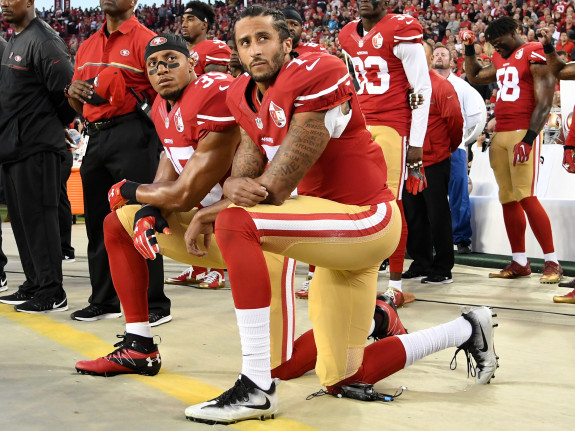
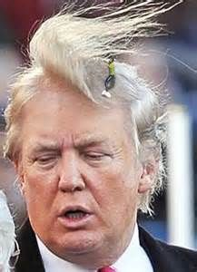
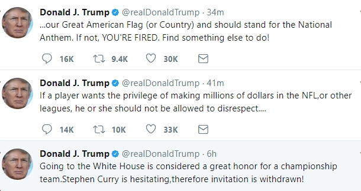
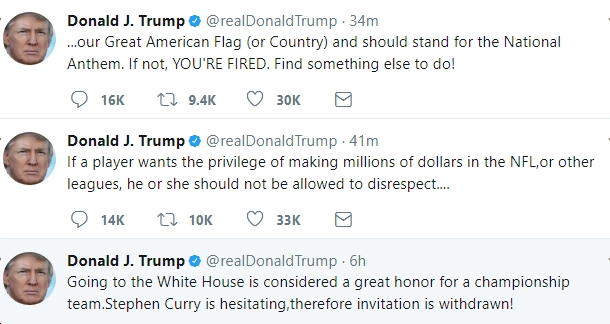

What all started with Colin Kapernick turned into chaos. Colin Kapernick during the 2016 NFL season decided to kneel during the anthem because in his words "I am not going to stand up to show pride in a flag for a country that oppresses black people and people of color. To me, this is bigger than football and it would be selfish on my part to look the other way. There are bodies in the street and people getting paid leave and getting away with murder." He casued a lot of controversy. Lots of players came to the defense of Kapenrick and started kneeling for the anthem as well.
 Soon Donald trump started tweeting which he does so well, about Colin Kapernick and NFL playters. He actually called players bi**hes if they didnt stand for the flag.
 
Back.
Next.

Back.
Next.